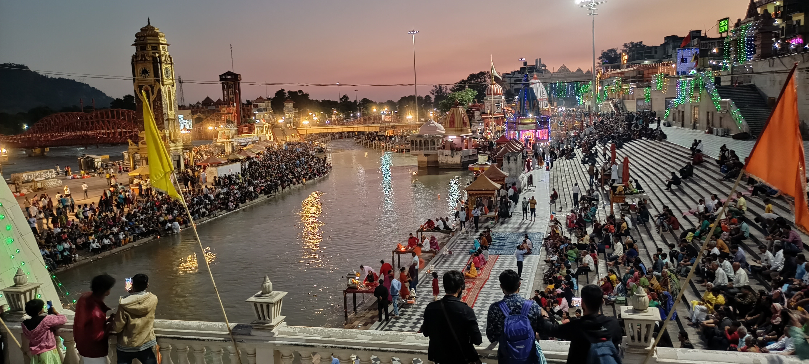
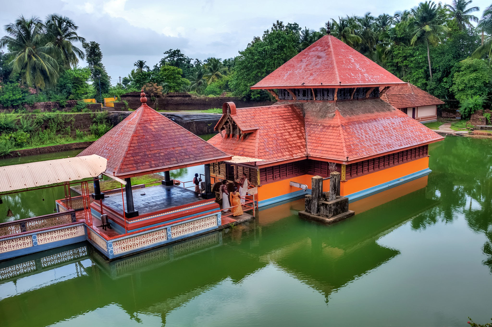

Homely Holidays offers a rare opportunity to discover compellingly beautiful and remote region of India. It also offers to trigger a more conscious society through rural engangment.Tourists can stay in locally owned guesthouses, taste traditional food, participate in local festivals, and learn about local crafts and traditions. This type of tourism can also benefit the local community by providing a source of income and employment. It can help to support local businesses and preserve traditional customs and practices. Additionally, it can promote the conservation of natural resources and protect the environment.
Go somewhereWe offer a variety of adventurous trips and experiences for those seeking an
adrenaline-filled vacation in rural areas.Some examples are
Trekking and Hiking: Many rural areas offer scenic hiking and trekking trails through forests,
mountains, and valleys. Tourists can experience the thrill of climbing steep hills, crossing streams, and
exploring natural landscapes.
Rock Climbing: Rural areas often have rocky outcrops and hills that offer ideal conditions for rock
climbing. Tourists can challenge themselves by scaling these rocks with the help of expert guides.
Paragliding and Hang Gliding: Many rural areas offer opportunities for paragliding and hang gliding,
allowing tourists to soar through the skies and experience breathtaking views of the surrounding
landscape.
Homestays are an important component of village tourism, as we provide a unique
opportunity for tourists to experience the local culture and way of life by staying with a local family in
their home.
Farmstays: Farmstays provide an opportunity for tourists to experience rural life by staying on a working
farm. Tourists can participate in daily farm activities, such as milking cows, feeding animals, and
planting crops, and learn about sustainable farming practices.
Traditional Homestays: Traditional homestays offer tourists a chance to stay in a local family's home and
experience their culture and customs. Tourists can enjoy traditional meals, learn about local crafts and
customs, and participate in local festivals and celebrations.
Heritage Homestays: Heritage homestays offer tourists a chance to stay in historic homes that have been
preserved to reflect the local culture and architecture. Tourists can learn about the history and heritage
of the area and experience the lifestyle of the past.
We offers a unique opportunity for tourists to experience the tradition and culture of
rural communities.
Festivals and Celebrations: Rural areas are often rich in traditional festivals and celebrations that are
unique to the local community. Tourists can participate in these festivals and celebrations, which provide
a window into the local culture, customs, and traditions.
Local Crafts and Art: Rural areas often have a rich tradition of handicrafts and art, such as pottery,
weaving, and painting. Tourists can visit local artisans and craftsmen and observe their work, learn about
the techniques used, and even participate in workshops.
Traditional Food and Cuisine: Rural areas often have a unique cuisine that is based on local ingredients
and cooking methods. Tourists can taste traditional dishes and learn about the local culinary practices,
such as the use of herbs and spices, or traditional cooking techniques.
Historical and Cultural Sites: Rural areas often have historical and cultural sites that reflect the local
culture and traditions. Tourists can visit these sites, such as temples, forts, or heritage homes, and
learn about the history and culture of the area